【Breve descripción de lo que aprenderás en esta unidad】
Si en la unidad anterior aprendimos cómo se organizan los electrones dentro del átomo, ahora daremos el siguiente paso esencial: entender cómo esos electrones interactúan entre átomos distintos para formar moléculas y compuestos. En esta unidad exploraremos la regla del octeto, que explica por qué los átomos tienden a ganar, perder o compartir electrones para alcanzar la estabilidad similar a la de los gases nobles. Aprenderemos a representar estas interacciones mediante las estructuras de Lewis, verdaderos diagramas que nos muestran los electrones de valencia y los enlaces entre átomos. Finalmente, clasificaremos los enlaces químicos (iónicos, covalentes y metálicos), entendiendo cómo cada uno determina las propiedades físicas y químicas de las sustancias. Dominar esta unidad es clave para empezar a 'construir' moléculas y predecir el comportamiento de la materia que nos rodea.
Comprender cómo los átomos se unen mediante enlaces químicos a partir de la regla del octeto y las estructuras de Lewis, para explicar la formación y propiedades de las sustancias.
¿Qué es la regla del octeto?
Es una regla química que establece que los átomos tienden a ganar, perder o compartir electrones para completar 8 electrones en su último nivel de energía (capa de valencia), alcanzando así la configuración electrónica estable de un gas noble.
Los gases nobles (He, Ne, Ar, Kr, Xe, Rn) tienen 8 electrones en su capa externa (excepto el Helio, que tiene 2) y son químicamente estables por naturaleza. El resto de los átomos buscan imitarlos mediante enlaces químicos.
Ejemplo 1: Formación del Cloruro de Sodio (NaCl) - Enlace iónico
El sodio (Na) tiene 1 electrón de valencia. El cloro (Cl) tiene 7 electrones de valencia.
El sodio pierde su electrón y se convierte en Na⁺ (con 8 electrones en su nueva capa externa, que es la anterior).
El cloro gana ese electrón y se convierte en Cl⁻ (completando 8 electrones en su capa externa).
Ambos cumplen el octeto: Na⁺ (configuración de Ne) y Cl⁻ (configuración de Ar).
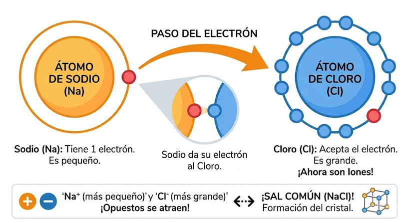
Ejemplo 2: Formación de la molécula de Metano (CH₄) - Enlace covalente
El carbono (C) tiene 4 electrones de valencia. Necesita 4 más para completar el octeto.
Cada hidrógeno (H) tiene 1 electrón y necesita 1 más para completar su dueto.
El carbono comparte sus 4 electrones con 4 átomos de hidrógeno. Cada hidrógeno comparte su electrón con el carbono.
Resultado: El carbono queda rodeado de 8 electrones (4 propios + 4 compartidos) y cada hidrógeno tiene 2 electrones.
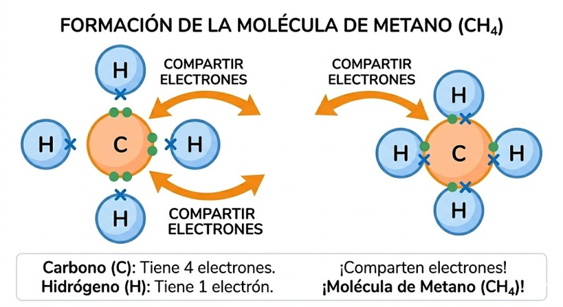
Ejemplo 3: Molécula de Oxígeno (O₂) - Doble enlace covalente
Cada oxígeno tiene 6 electrones de valencia. Necesita 2 más para alcanzar el octeto.
Para lograrlo, comparten dos pares de electrones (doble enlace). Cada oxígeno aporta 2 electrones al enlace.
Así, cada oxígeno queda con 8 electrones (2 propios no compartidos + 4 del doble enlace + 2 más propios).
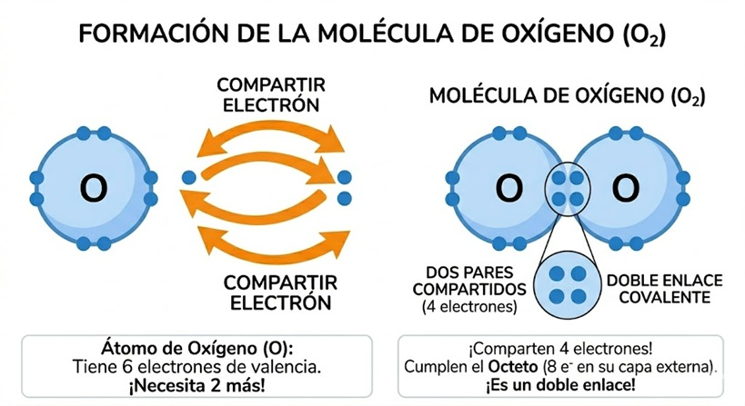
La regla del octeto nos permite predecir cómo se unen los átomos, qué tipo de enlace formarán (iónico o covalente) y la estructura de las moléculas. Es la base para dibujar estructuras de Lewis y entender la reactividad química.
Completa la siguiente tabla indicando cuántos electrones necesita cada átomo para cumplir el octeto (o dueto) y qué tipo de ión o enlace tendería a formar:
| Átomo | Electrones de valencia | Electrones que necesita ganar/perder | Ión resultante o tipo de enlace que prefiere |
|---|---|---|---|
| Oxígeno (O) | 6 | ___ | ___ |
| Magnesio (Mg) | 2 | ___ | ___ |
| Nitrógeno (N) | 5 | ___ | ___ |
| Flúor (F) | 7 | ___ | ___ |
¿Qué es la estructura de Lewis?
Es una representación gráfica que muestra los electrones de valencia de los átomos en una molécula o ión. Los electrones se representan como puntos alrededor del símbolo del elemento, y los enlaces covalentes se representan como líneas (cada línea equivale a un par de electrones compartidos).
Esta herramienta fue propuesta por el químico Gilbert N. Lewis y nos permite visualizar cómo se unen los átomos para cumplir la regla del octeto.
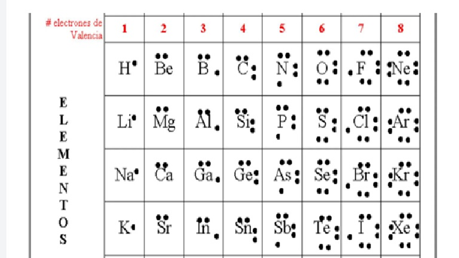
Antes de construir moléculas, debemos saber representar átomos aislados. El número de puntos alrededor del símbolo es igual a sus electrones de valencia:
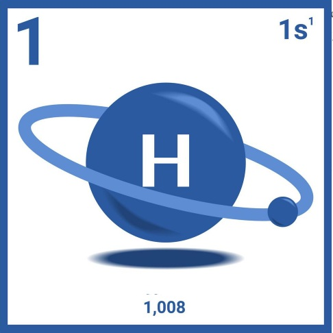
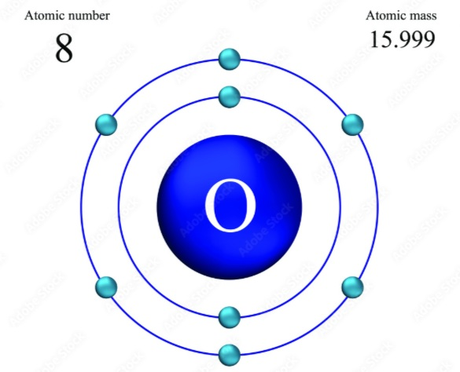
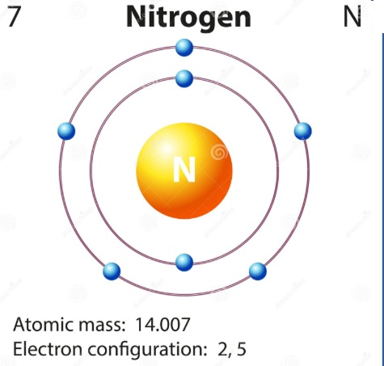
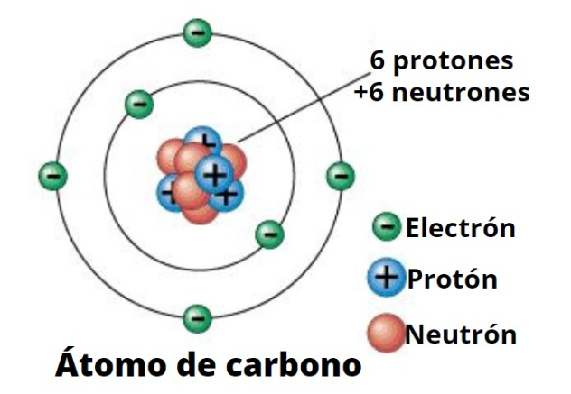
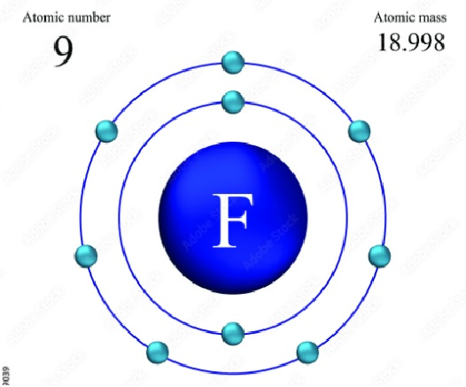
Ejemplo 1: Agua (H₂O)
Representación: H — O — H (con dos pares de electrones libres sobre el O)
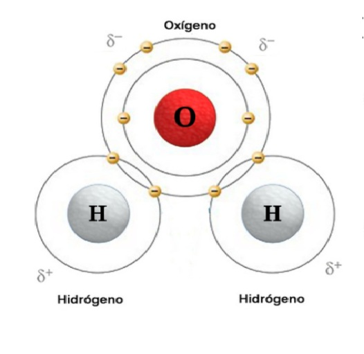
Ejemplo 2: Dióxido de carbono (CO₂)
Representación: :O = C = O: (cada O con dos pares de puntos)
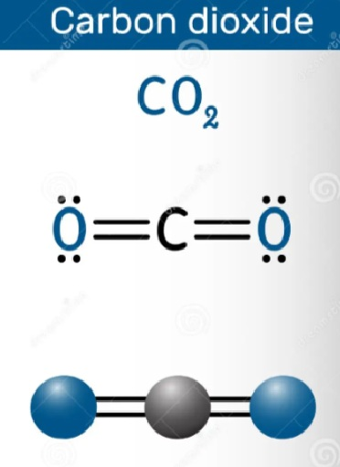
Ejemplo 3: Amoníaco (NH₃)
Representación: H - N - H (con un par de puntos sobre el N y el tercer H unido al N)
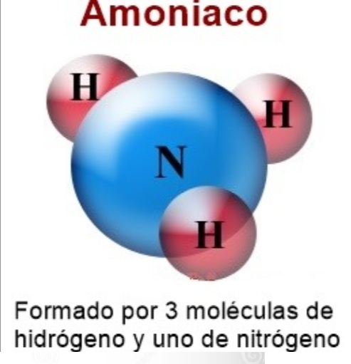
Ejemplo 4: Ión cloruro (Cl⁻) - ión monoatómico
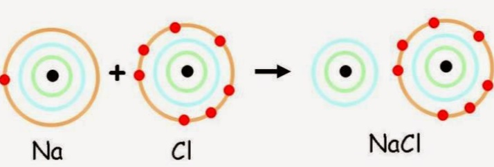
Dibuja la estructura de Lewis para las siguientes moléculas e iones:
Nuestra tabla periódica de electronegatividad es la herramienta definitiva para dominar la química de forma visual. Este recurso incluye un intuitivo sistema de “semáforo” que clasifica la intensidad de los elementos, desde niveles nulos hasta valores máximos como el del Flúor (3.98). Al resaltar visualmente la fuerza de atracción de cada átomo, los conceptos abstractos se vuelven lógicos y fáciles de recordar para estudiantes y docentes por igual.
Para máxima versatilidad, el PDF ofrece dos versiones: una a todo color para proyecciones y otra en blanco y negro ideal para imprimir y trabajar a mano. Los profesores pueden asignar actividades prácticas de colorear, mientras los alumnos acceden a una guía de estudio precisa con números atómicos y símbolos claros. ¡Descarga este material gratuito ahora y eleva el nivel de tus clases de química!
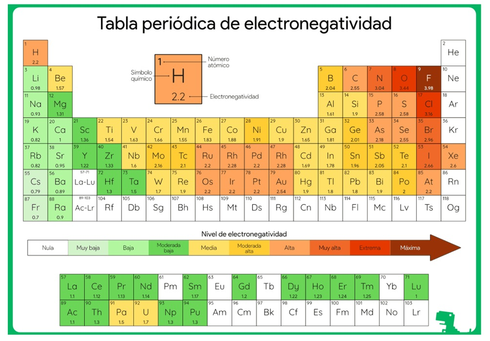
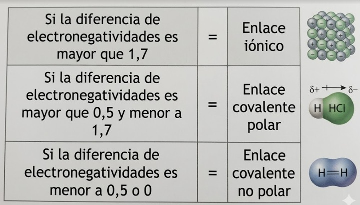
¿Qué es un enlace químico?
Es la fuerza que mantiene unidos a dos o más átomos para formar moléculas, cristales o compuestos. Los átomos se enlazan para disminuir su energía y alcanzar una configuración electrónica estable (generalmente completando su octeto o dueto).
Existen tres tipos principales de enlaces químicos, que se diferencian por la forma en que los átomos comparten o transfieren electrones.
¿Cómo se forma?
Se produce por la transferencia total de electrones desde un átomo (generalmente metal) hacia otro átomo (generalmente no metal). El metal pierde electrones y se convierte en un catión (+), mientras que el no metal gana electrones y se convierte en un anión (-). Luego, los iones de carga opuesta se atraen electrostáticamente.
Características:
Ejemplo: Cloruro de sodio (NaCl)
Na (1 electrón de valencia) → pierde 1 e⁻ → Na⁺
Cl (7 electrones de valencia) → gana 1 e⁻ → Cl⁻
Na⁺ + Cl⁻ → NaCl (cristal iónico)
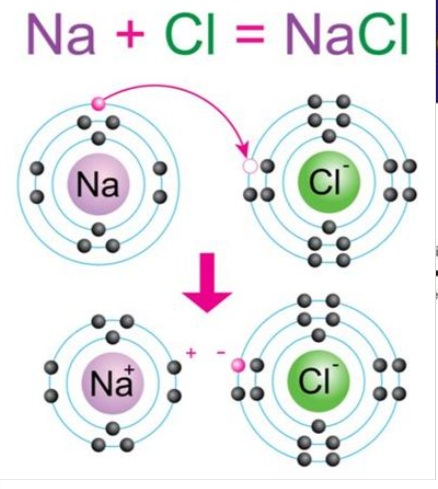
¿Cómo se forma?
Se produce por el compartir de pares de electrones entre dos o más átomos no metálicos. Ambos átomos aportan electrones para formar el enlace y así completar sus octetos.
Características generales:
Clasificación según el número de pares compartidos:
A) Enlace Covalente No Polar (o Apolar)
Ocurre cuando los dos átomos que comparten electrones tienen la misma electronegatividad. Los electrones se comparten de manera equitativa y la molécula no presenta polos (positivo y negativo).
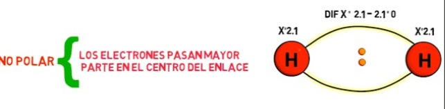
B) Enlace Covalente Polar
Ocurre cuando los dos átomos tienen diferente electronegatividad. El átomo más electronegativo atrae con más fuerza los electrones compartidos, generando una carga parcial negativa (δ-) sobre él y una carga parcial positiva (δ+) sobre el otro.
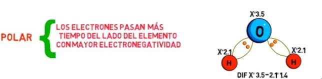
Tabla comparativa: Covalente No Polar vs Polar
| Característica | Covalente No Polar | Covalente Polar |
|---|---|---|
| Distribución de electrones | Equitativa | Desigual (un átomo atrae más) |
| Molécula resultante | Apolar (sin polos) | Polar (con polos δ+ y δ-) |
| Ejemplos | H₂, Cl₂, CH₄ | H₂O, NH₃, HCl |
| Diferencia de electronegatividad | < 0.4 | 0.4 - 1.7 |
¿Cómo se forma?
Se produce entre átomos de metales (sodio, hierro, cobre, etc.). Los electrones de valencia de los metales se deslocalizan y forman una "nube de electrones" que se mueve libremente entre todos los núcleos positivos. Se describe con el modelo de "mar de electrones".
Características:
Ejemplo: Cobre metálico (Cu)
Los átomos de cobre se organizan en una estructura cristalina donde los electrones de valencia (1 electrón por cada átomo de Cu) se mueven libremente, formando un "mar" que mantiene unidos los iones Cu⁺.
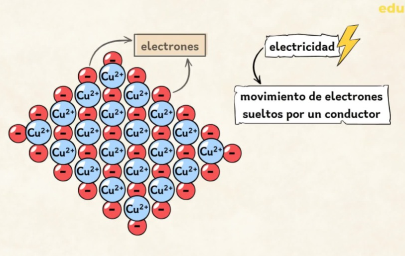
| Característica | Enlace Iónico | Enlace Covalente | Enlace Metálico |
|---|---|---|---|
| Tipo de elementos | Metal + No metal | No metal + No metal | Metal + Metal |
| Mecanismo | Transferencia de e⁻ | Compartición de e⁻ | Mar de electrones deslocalizados |
| Entidades resultantes | Iones (cationes y aniones) | Moléculas o redes covalentes | Red metálica |
| Conductividad eléctrica | Solo fundido o disuelto | Generalmente mala | Muy buena (sólido y fundido) |
| Punto de fusión | Alto | Bajo a muy alto | Alto (variables) |
| Maleabilidad/Ductilidad | Frágiles | Frágiles (sólidos) | Maleables y dúctiles |
【Describe aquí la actividad que deben realizar los estudiantes. Puede ser:】